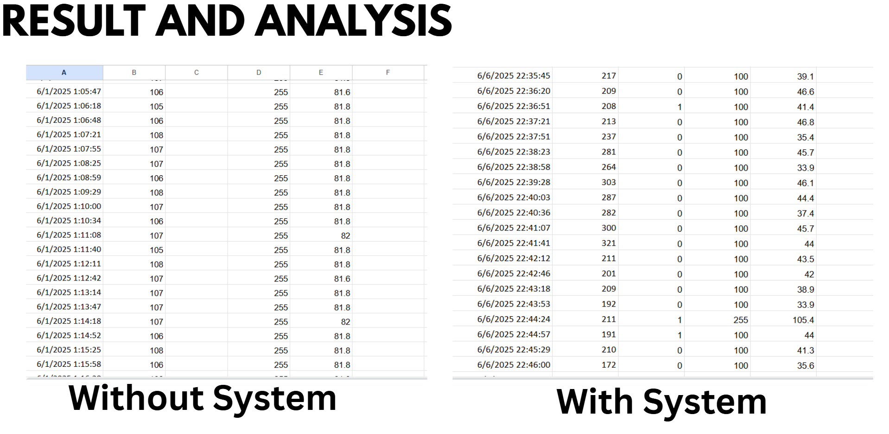
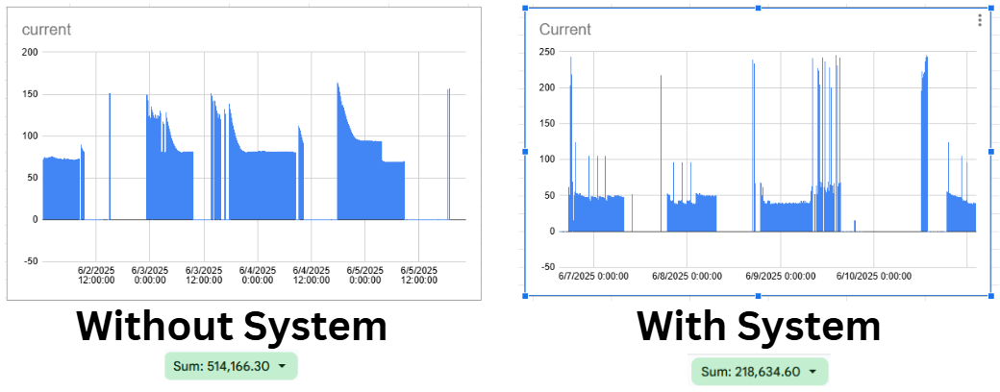
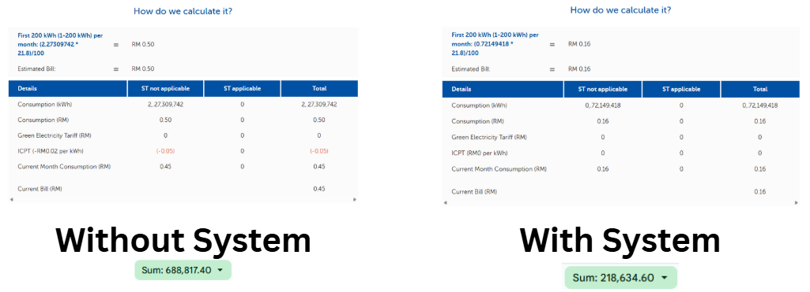
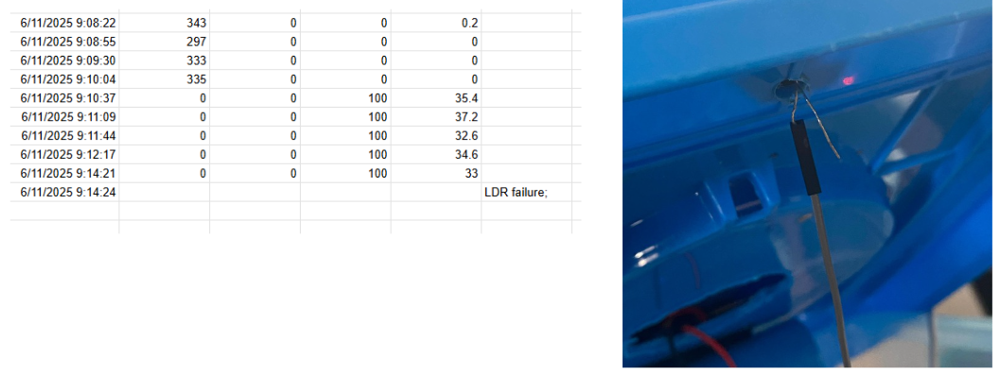
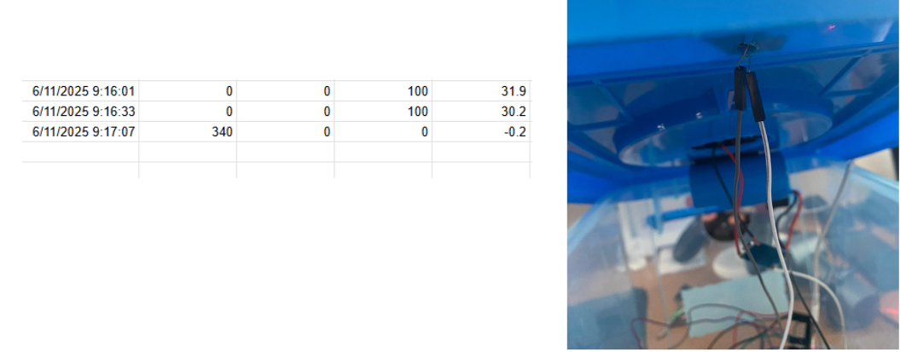
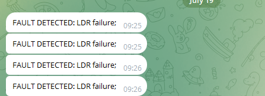
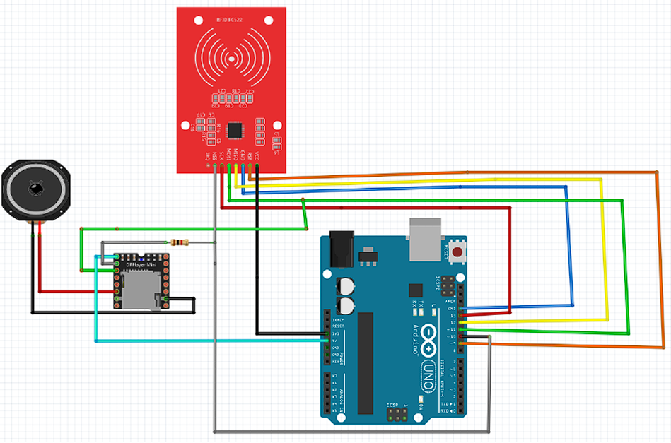

DIGITAL PORTFOLIO
FAHMI ROSMIDI
FYP Project
IoT Enabled Smart Street Lighting System for Energy Efficient Smart Cities, 2025
My project focuses on developing an IoT-enabled smart street lighting system aimed at enhancing energy efficiency in smart cities. The system utilizes advanced sensors and data analytics to optimize lighting based on real-time conditions, significantly reducing energy consumption and operational costs. This innovative approach not only improves the sustainability of urban environments but also enhances the quality of life for residents. This project also aims to integrate renewable energy sources, such as solar panels, to further reduce the carbon footprint of street lighting. In this project, I was awarded Bronze Medal at UTeM’s Inovation & Technology Competition, INOTEK Series II (Final Year Project - Category), June 2025.


The purpose of this project is to create a more intelligent and responsive street lighting system that can adapt to changing environmental conditions and user needs. By leveraging IoT technology, the system can provide optimal lighting levels while minimizing energy waste, contributing to the overall goal of creating smarter, more sustainable cities.
Results from the project indicate a significant reduction in energy consumption, with the smart system achieving up to 60% savings compared to traditional street lighting methods.


The project also integrated with fault detection mechanisms, allowing for proactive maintenance and reducing downtime. Overall, the IoT-enabled smart street lighting system presents a viable solution for cities looking to enhance their infrastructure while promoting sustainability and energy efficiency.
In this project, fault detection system by using telegram bot is implemented to notify the authority if there is any fault occur in the street light system. This will help the authority to take immediate action to fix the fault and ensure the street light system is always operational. Key Features of the Project:- IoT Integration: Utilizes IoT technology for real-time monitoring and control of street lights.
- Energy Efficiency: Implements adaptive lighting strategies to minimize energy consumption.
- Renewable Energy: Incorporates solar panels to power the street lighting system.
- Data Analytics: Uses data analytics to optimize lighting patterns based on environmental conditions and user behavior.
- Cost Savings: Reduces operational costs through efficient energy use and maintenance.
- Environmental Impact: Contributes to reducing the carbon footprint of urban lighting systems.
- Fault Detection: Integrates a fault detection system using Telegram bot to notify authorities of any issues in the street light system for prompt maintenance.
IDP PROJECT
Jungle Jams Tram, Enriching Zoo Encounter Through RFID Audio, 2024
Jungle Jams Tram integrates:
- RFID RC522 module
- DFPlayer Mini MP3 module
- Arduino Uno R3
- 8Ω 3W speaker
Objectives:
- Develop an automated RFID-triggered audio system
- Enhance visitor learning and enjoyment
- Promote wildlife conservation education
Problem Statement:
- Limited visitor interaction
- Information overload on signage
- Underutilized technology
This project focuses on developing an innovative audio guide system for zoo visitors using RFID technology. The system aims to enhance the visitor experience by providing informative and engaging audio content about the animals and exhibits as they explore the zoo.
The audio guide system utilizes RFID tags placed at various exhibits throughout the zoo. Each jungle tram is provided with RFID-enabled devices that automatically play relevant audio content when they approach an exhibit. This hands-free experience allows visitors to learn about the animals and their habitats without needing to read signs or use their phones.

Key Features:
- Real-time RFID card scanning.
- Location-based audio playback.
- Curated educational content.
- Scalable for more tram stops/exhibits.
Benefits:
- Enhanced visitor engagement.
- Improved learning experience.
- Hands-free and convenient.
- Supports conservation education.
Overall, the Jungle Jams Tram project aims to create a more interactive and educational experience for zoo visitors, leveraging RFID technology to deliver timely and relevant audio content about the animals and exhibits they encounter.
My Name
Hi! My name is Muhammad Fahmi Hafizi bin Rosmidi. I'm a fresh graduate with a degree in Computer Engineering. I'm passionate about technology and its potential to improve lives. I really love coding and exploring new technologies. I'm always eager to learn and take on new challenges.
Experience
-
Raffcomm Sdn Bhd
(July, 2024 – October, 2024)
Internship as Web Developer
● Developed and maintained 10+ responsive web pages using HTML, CSS, JavaScript, and Bootstrap, improving user engagement time by 30%.
● Built 3 full-stack web applications with CRUD functionalities, supporting 100+ user records and enabling realtime data updates with under 1s latency.
● Integrated frontend and backend components for 2 major projects, resulting in a 25% improvement in system response time and 100% error-free data sync.
● Gained hands-on experience with version control tools like Git for team collaboration and source code management. -
Kimyra International Sdn. Bhd
(September, 2019 – December, 2019)
Sales Executive
● Assisted 20+ customers daily by providing detailed product and service explanations, achieving a 95% satisfaction rating based on post-interaction feedback.
● Increased monthly sales revenue by 15% through targeted upselling, personalized recommendations, and consistent customer engagement.
● Resolved customer complaints and issues promptly and effectively, enhancing overall customer experience and retention rates.
Skills
-
 PHP
PHP
-
 HTML
HTML
- CSS